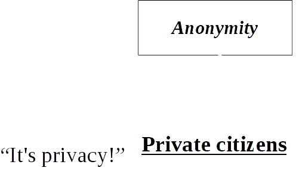

Vasilis Ververis (andz@torproject.org)
GPG Fingerprint: 8FD5 CF5F 39FC 03EB B382 7470 5FBF 70B1 D126 0162
Public Key: https://pgp.mit.edu/pks/lookup?op=get&search=0x5FBF70B1D1260162
Francisco Core (francisco.core@protonmail.com)
Mission: be the global resource for technology, advocacy, research and education in the ongoing pursuit of freedom of speech, privacy rights online, and censorship circumvention.
- Online anonymity
- FL/OSS
- Open (volunteer based) network
- Community: researchers, developers, users, relay operators, [...]
- U.S. 501(c)(3) non-profit organization
How Internet Works?
{kind=link}
{kind=link}
- Internet is not the WWW (World Wide Web)
- Internet is the infrastructure
- Web is a service of this infrastructure
.jpg){kind=link}
- Source/destination IP address
- Geographical location
- WWW (World Wide Web):
- Web Browser
- Operating system
- Addons/Extensions
Other services: e-mail, telephone, chat (IRC, IM), file sharing,...
Understanding your thread model:
I use encryption (HTTPS, ...) my ISP cannot see my traffic! Maybe it cannot see your traffic (in cleartext), *but* it tracks:
- Websites visited
- Locations logs
- IP address logs
- ..archived for x time: Data retention
Anonymity: different interests for different user groups
Anonymity: different interests for different user groups
Anonymity: different interests for different user groups

Anonymity: different interests for different user groups
Anonymity: different interests for different user groups
How Tor works
{kind=link}
{kind=link}
{kind=link}
Tor's safety comes from diversity
- Diversity of relays
- Diversity of users
Transparency for Tor is key
- FL/OSS
- Public design documents and specifications
But what about the bad people?
- (remember) the millions of daily users
- Still a two-edged sword?
- Good people need Tor much more than bad people need it
Onion services
- Self authenticated
- End-to-end encrypted
- Built-in NAT punching
- Limit surface area
- No need to “exit” from Tor
{kind=link}
- About 3% of Tor's traffic has to do with onion services at all
- Onion services are still in the "neat toy" stage
- Terbium labs (and others) found ~7000 useful onion sites
{kind=link}
{kind=link}
{kind=link}
How can you help Tor?
- Run a relay (or a bridge)
- Teach your friends about Tor, and privacy in general
- Help fix -- and fix -- bugs
- Work on open research problems (petsymposium.org)